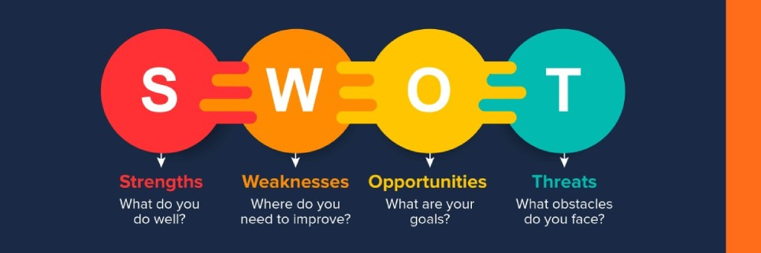
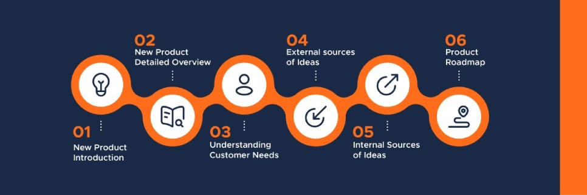

Are you thinking of entering the market with a new product? Then, do thorough research on what you need. Don't know where to dig? We are here with this blog post to guide you.
Developing a new product is a big deal. The more passionate we are about developing a product, the more attention we need. Everything in the field of business should be well researched and planned. This is true especially when launching a new product.
To remain successful in the face of maturing products, companies need a continuous stream of fresh ideas that are successfully developed into new products. The way to achieve new products is through a structured and carefully-executed New Product Development (NPD) process.
Without further ado, let's get a jump to the point!
Before diving into the big words of the New Product Development Process, you need a picture of what New Product Development is.
As the name implies, NPD is how to release a new product in the market proactively. The new product is of two kinds, one is a completely new product to the industry and the other one is a variation of an existing one. Whichever of these two you choose, you need to look at it in its own way.
If it is a completely new product, there are many things like its demand in the market, how many people will benefit from it, what profit can be made and how it can be successful. However, the first thing to do when developing a new version of a product is to know the pros and cons of the old product and what changes will benefit the new product to be successful.
The complete set of activities through which a firm visualizes and delivers a new offering is called the new product development process. It includes all necessary steps from determining product-market fit to determining the optimal approach to produce and launch the product to determining its pricing and go-to-market strategy.
As you can imagine, the NPD process looks a little different from an engineering angle of view. Here, the technical aspects are emphasized more, while the business implications are in the background. It means that new product development focuses more on technical design, integration of features, prototyping, etc. A structured and carefully executed new product development process (NPD) is the best way to achieve success with new products.
Several levels can be looked at in the NPD. Here we break down the process of creating a new product into seven.
Mainly speaking, this seven-step process is about how to launch your new product and how to make it run in the front line of the market.
This is usually accomplished by encouraging design and product improvement through innovative ideas and professional technical approaches. Such as:
- Use Concept Generation to analyze user needs.
- Deep dive into the problems and pick the best solution.
- Addresses usability, security, and user acceptance issues to further improve existing products.
- Use principles of Aesthetics and Ergonomics.
- Compare your ideas and rank your concepts.
Let’s have a look at the different stages of new product development.

The beginning of developing any product is when you start thinking about it. It is one of the most crucial phases of NPD and entails brainstorming an idea that would help you overcome existing drawbacks in a novel and creative way. It’s important to have a deep study of the target audience and their pain points, which you should tackle while brainstorming ideas to help you meet customer demands.
The areas that you need to give more focus on while brainstorming your ideas about the new product development are:
- Target audience
- Related products in the market
- Functionality
- Do a SWOT test
- Use SCAMPER method

The second stage of the NPD process is idea screening. Sort out the best ones. Idea screening refers to the ideas we get through idea generation that are screened well to spot good ones and flush out the poor ones as soon as possible.
While in the stage of idea generation we collect a list of ideas, and it is impossible to work out all of those. The purpose of idea screening is to cut-shot the list of ideas. This is because the cost of product development increases tremendously at later stages. Companies can't take every idea to the next level.
It's not so easy to say drop the poor ideas. Make sure that each idea is valuable or not because the quality of the product will be affected if we drop the better ideas. But if we choose ineffective ideas, it will affect the cost very badly.
It is not enough for us to know what product we are going to have and what ideas have made it through. Additionally, we need to convince our prime target customers. Concept development means analyzing it so that they can understand it in a better way.
Instead of testing the product itself, at this stage, you will be testing the concept of your product. A product concept is a more comprehensive version of a concept expressed in customer-friendly terms.
- A product idea:- This is a set of ideas for a possible product.
- A product concept:- This is a detailed version of the concept stated in meaningful consumer terms.
- A product image:- This is how consumers perceive an actual or potential product.
Essential steps of concept development are:
- Measuring the gain and pain ratio
- Perform a competitor analysis test
- Identify the core features of the product
- Create a value proposition chart
Once you've developed a well-designed concept, testing is the next logical step. Customers should be able to understand the concept and verify that it has been created effectively. Your next step is to pitch your idea to a limited group of potential customers and evaluate/test it.
The next exciting step in the NPD is the developing process of business and marketing strategy. After developing a clear picture of the product concept, next, we moved and planned how to introduce the product in the market.
This step aims to set the profit expectations. As said in the name, we need to set some strategy to achieve the target profit. 4 P’s of Marketing strategy:-
- Price
- Place
- Product
- Promotion
At this stage of the new product development process, your product is best suited to be a prototype or the first version of the product. This way, you get a physical representation of your idea that you can test in real life, not just on paper. This prototype, also known as Minimum Viable Product (MVP), is a simplified version of your product to get a sense of how it works and areas for improvement.
Sometimes it is necessary to develop one or more physical versions of the product concept is needed. Creating a successful prototype model takes days, months, or even years.
In most cases marketers choose the consumers for doing the testing job, It gives us more realistic results. Their experience and view of the point are very useful in the product development step.
The final stage before commercialization is test marketing. In this stage, the product and its proposed marketing program are tested in realistic market settings. Therefore, test marketing gives the marketer the experience of marketing the product before going to the big expense of a full introduction.
Testing your product early before investing too much time and money can ensure its success. A positive response indicates that there is sufficient demand for the product, leading to the start of the manufacturing process.
Two types of market testing are:-
- Alpha testing: It helps the test engineers to analyze the product performance.
- Beta testing: It mainly focuses to involves customers using the product and giving input to the company.
The Final last stage of NPD is commercialization. In this phase, the management has the final decision to take, which means launch or not launch the product. Otherwise, we can state it as commercialization refers to introducing a newly developed product directly into the market.
At this stage, the highest costs are incurred, and the company needs to build or rent a manufacturing facility. In the first year, a large amount of money may be spent on advertising, sales promotion, and other marketing efforts.
In this stage, we mainly focus on the time and place. Where to launch the product is a crucial decision and you need to think twice. Similarly, when to launch the product is also that much important.
What do you think about the goal of the NPD process? Yes, the main objective is to create superior customer value. With the rapid development in technology and modernization, everyone should be aware and get a better understanding of these 7 steps of the NPD process. It is crucial to making your product a success in the industry.
CO-Founder
Yokesh Sankar, Co-Founder and Chief Operating Officer of Sparkout Tech Solutions, leverages his expertise to drive innovation and operational excellence in the software industry. Passionate about empowering individuals with essential skills, he uses technology to streamline business processes and enhance efficiency. He advocates for AI and blockchain adoption, helping businesses integrate these technologies seamlessly into their operations. Staying ahead of AI trends, Yokesh explores industry applications and shares insights to foster growth and knowledge in the tech sector.